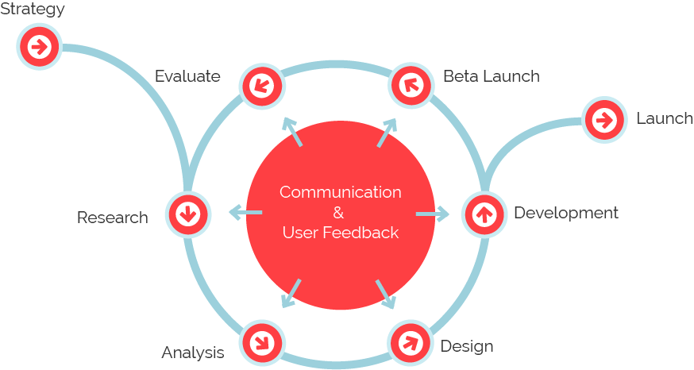

My Journey Into UX
- 01 Quality Control
This was my first job, following graduation from the university. I worked in a Titan firm wherein my role was that of a quality Control analyst. In the Interim, I picked up coding.
- 02 PHP trainee
Involved in a team that created web-based applications. During this time, I learnt how to build and develop PHP scripts to create or add features in applications based on client's needs.
- 03 Bakery owner
Keeping abreast of industry trends to ensure that products are appealing to customers. Managing employees according to work requirements and business needs. Meeting with suppliers to discuss pricing or new product development opportunities.
- 04 Graphic design
Studied design briefs and determine requirements.Schedule projects. Conceptualize visuals based on requirements.Prepare rough drafts and present ideas. Developed illustrations, logos and other designs using software or manually
- 05 Web design
Studied design briefs to ascertain requirements. Conceptualize visuals based on requirements, project planning. prepared rough drafts presenting the ideas. I learnt how to turn my illustrations, designs and logos in paper into graphics using the software.
- 06 UX Design (5+ yr)
I transitioned into UX designer because I recognised the need for both qualitative and quantitative research. I also love having an active role in designing a better solution. I believe that understanding your users and acknowledging their needs and concerns is the key to improving functionality, ease of use, and enjoyment.

The Design Process
My experience has taught me that good design is not created in a moment of inspiration or a bubble. It is an iterative process requiring collaboration between multiple teams and your end users. It is easy to get attached to initial design solutions and forgo research and testing but this rarely works. First solutions are often wrong because in the early stages it is hard to know enough about the problem you are attempting to solve. It is important to first answer the 5 Ws (Who, What, Where, When, and Why) before tackling the How.
Great design requires deep knowledge of your users, their environments, and their goals. Conducting research, talking to users, collaborating with different teams and testing prototypes all help keep a project on track. I believe that successful design projects stem from good communication and keeping the end-user in the forefront.
What am I doing when I’m not helping to create awesome products?
I think it is very important to maintain a good work-life balance. Outside of work my interests include traveling, hiking, chasing my energetic toddler, and exploring different cuisines with my family.
That's enough about me, let's talk about you!
If you like what you see and want to chat please contact me!
+91 9159978147
Bengalore, India
View Recommendations